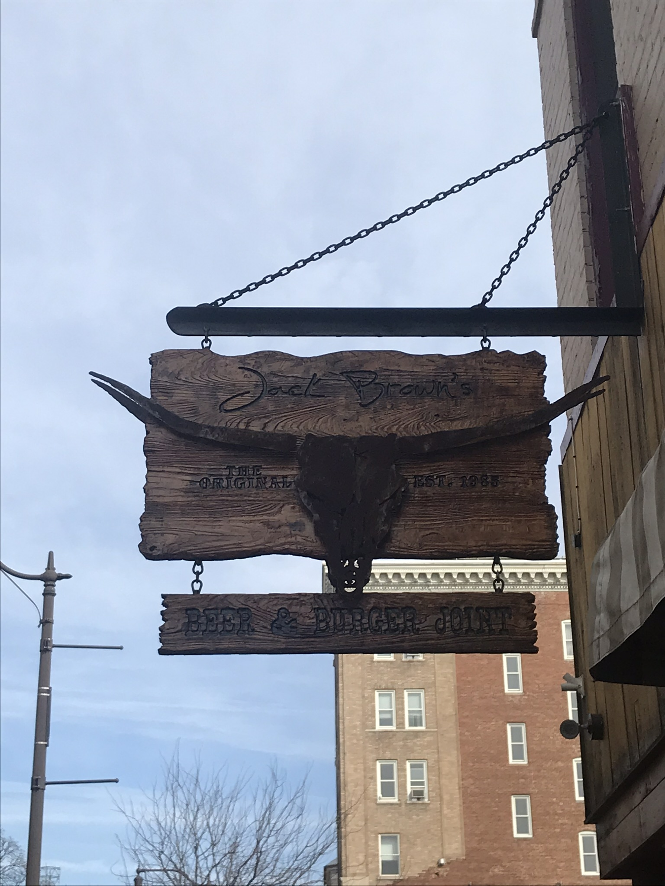
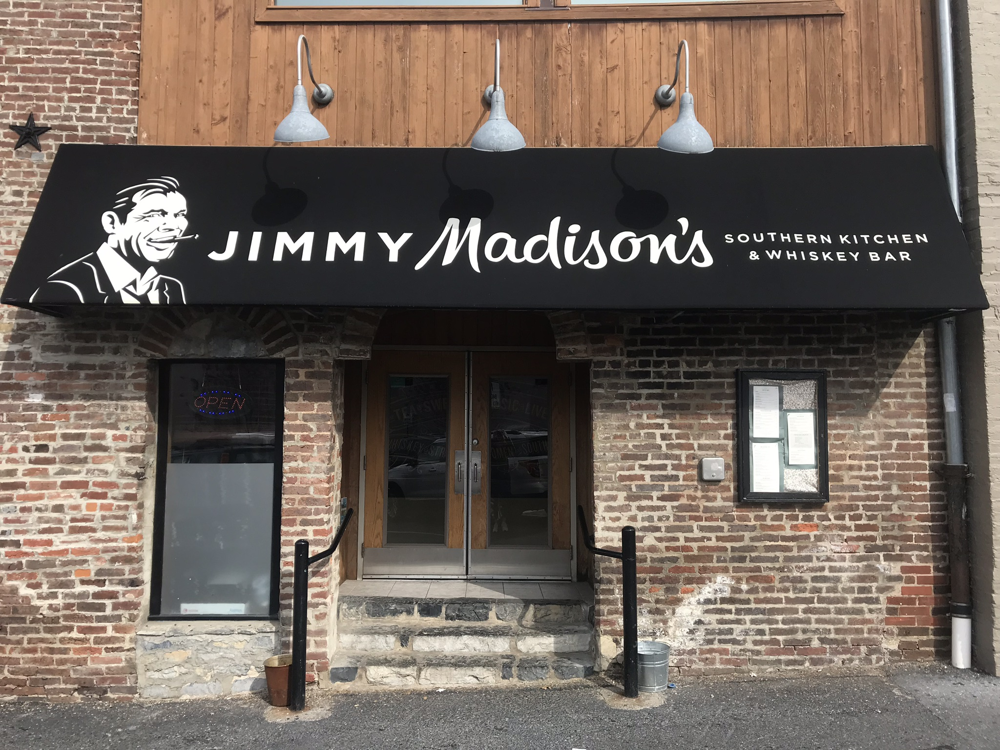

Harrisonburg
"The Friendly
City"
"The Friendly
City"

Jack Brown's in Downtown Harrisonburg

Downtown Harrisonburg
If you are looking for some live music, good food, and cute clothing stores. Downtown Harrisonburg has all of that and more. From Clementimes hosting bands to play every Friday night to the local farmers market on Sunday mornings, downtown Harrisonburg is the perfect place for you and your friends to gather, to share laughter and have a good time.

Jimmy Madison's Southern Kitchen and Whiskey Bar
JMU's Student Culture
Downtown Harrisonburg is known as the "hotspot" for JMU students. Campus being only walking distance away, students love to take time away from their classes to come check out the stores and restaurants that Downtown Harrisonburg has to offer.